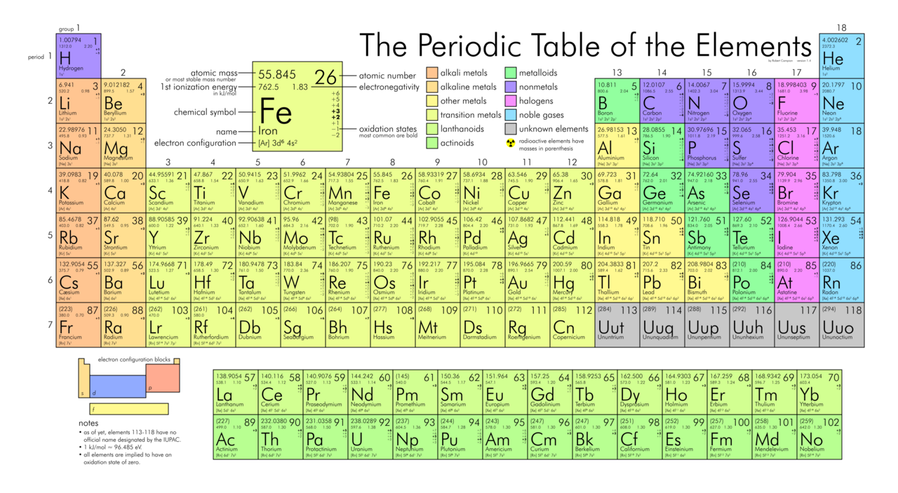

Plataforma educativa em nutrição para estudantes e curiosos — com conteúdos científicos, ferramentas práticas e uma comunidade em crescimento.
"A bioquímica é a linguagem da vida."
— NutriScience Pro
Fundamentos
Explore a nomenclatura e as bases moleculares.
Performance
Entenda o metabolismo energético e vias de sinalização.
Mural da Comunidade
Nova Postagem
Postando como: Acesse sua conta
Espaço Coletivo
Estudar é individual. Evoluir é coletivo.
Como estão seus estudos essa semana?
Feed de Atualizações
Conteúdos automáticos sincronizados com o banco de dados.
Política de Privacidade
A sua privacidade é importante para nós. É política do NutriScience Pro respeitar a sua privacidade em relação a qualquer informação sua que possamos coletar no site.
Cookies e Anúncios
Utilizamos cookies para melhorar sua experiência. Como utilizamos o Google AdSense para veicular anúncios, o Google pode usar cookies (como o cookie DART) para exibir anúncios baseados em suas visitas a este e outros sites na internet.
Segurança dos Dados
Apenas retemos informações coletadas pelo tempo necessário para fornecer o serviço solicitado. Quando armazenamos dados, os protegemos dentro de meios comercialmente aceitáveis para evitar perdas e roubos.
Você é livre para recusar a nossa solicitação de informações pessoais, entendendo que talvez não possamos fornecer alguns dos serviços desejados.
Calculadora Metabólica Pro
Dados baseados na equação de Mifflin-St Jeor
Tabela de Alimentos (100g)
Alimento
Proteína
Carbo
Gordura
Kcal
Olá, Nutri!
Acompanhe aqui sua evolução nos estudos.
Últimos Resultados
Realize um simulado para ver seu progresso.
Meta Diária
"A constância é o que transforma o esforço em hábito."
Mural da Jornada
Tratado Abrangente: Bioquímica e Fisiopatologia do Lactato
Da Cinética Enzimática à Sinalização Epigenética e Clínica Crítica.
1. Termodinâmica e a Falácia da Acidose Lática
A conversão de piruvato em lactato pela Lactato Desidrogenase (LDH) é uma necessidade termodinâmica. Com um $\Delta G^\circ'$ de aproximadamente $-6 \text{ kcal/mol}$, a reação favorece massivamente a formação de lactato para regenerar o pool citosólico de $NAD^+$.
Nota Crítica: Observe a estequiometria. A reação consome um íon $H^+$. Portanto, a lactatemia elevada durante o exercício intenso é um mecanismo de alcalinização que retarda a queda do pH intracelular causada pela hidrólise do ATP ($ATP + H_2O \rightarrow ADP + P_i + H^+$).
2. Dinâmica de Transporte: A Lançadeira de Brooks
O lactato não é um resíduo, mas a moeda de troca de carbono entre tecidos glicolíticos e oxidativos. Este fluxo é mediado pelos MCTs (Monocarboxylate Transporters), que operam via co-transporte de prótons.
MCT4 (Exportador)
Alta capacidade ($V_{max}$) e baixa afinidade ($K_m \approx 25-30 \text{ mM}$). Localizado em fibras tipo IIb. Atua como válvula de escape quando o fluxo glicolítico excede a capacidade mitocondrial.
MCT1 (Importador)
Alta afinidade ($K_m \approx 3-5 \text{ mM}$). Abundante no miocárdio e fibras tipo I. Permite o uso do lactato circulante como combustível oxidativo preferencial.
MCT2 (Neuronal)
Afinidade extrema ($K_m < 1 \text{ mM}$). Garante que os neurônios captem lactato dos astrócitos (Lançadeira ANLS) mesmo em níveis basais.
Durante a atividade sináptica, o glutamato estimula os astrócitos a realizar glicólise aeróbia. O lactato resultante é exportado para os neurônios, onde entra na mitocôndria para gerar 36 ATPs.
Lactato e Memória: O lactato induz a expressão de BDNF via ativação do eixo SIRT1/PGC-1α. Sem o transporte de lactato para o hipocampo, a consolidação da memória de longo prazo é severamente prejudicada.
4. O Conceito de "Lactormona" e o Receptor GPR81
O lactato atua como um ligante para o receptor HCAR1 (GPR81), acoplado à proteína $G_i$, regulando o metabolismo sistêmico:
Inibição da Lipólise: Níveis altos de lactato reduzem o cAMP nos adipócitos, desligando a HSL (Lipase Sensível a Hormônio). Isso impede a liberação excessiva de ácidos graxos quando a glicólise é a via prioritária.
Angiogênese: Estímulo da migração celular endotelial para reparação tecidual.
Simbiose Microbiótica: A bactéria Veillonella consome lactato intestinal para produzir propionato, melhorando a performance cardíaca do hospedeiro.
5. Lactilação de Histonas: O Código Epigenético
A descoberta da Lactilação (Kla) mudou a imunologia. O lactato não é apenas energia; ele altera a leitura do DNA.
O Relógio Celular
Em macrófagos pró-inflamatórios (M1), o acúmulo de lactato leva à lactilação da histona H3K18la. Isso ativa genes de reparação tecidual, forçando a transição para o fenótipo anti-inflamatório (M2).
Efeito Warburg Reverso
Tumores agressivos "escravizam" fibroblastos vizinhos para produzirem lactato via glicólise, utilizando este lactato como combustível mitocondrial para proliferação rápida via MCT1.
6. Otimização de Performance e Limiares
O segredo dos atletas de elite (como os triatletas noruegueses) é o controle preciso do MLSS (Máximo Estado Estável de Lactato).
Parâmetro
Nível (mmol/L)
Fisiologia Subjacente
Estratégia de Treino
LT1
~1.5 - 2.0
Início do recrutamento de fibras IIa.
Zona de Endurance: Densidade Mitocondrial.
LT2 (Limiar)
~3.5 - 4.5
Equilíbrio limite entre produção e depuração.
Intervalados de Limiar: Eficiência de MCTs.
VLaMax
Variável
Taxa máxima de produção de lactato.
Define o perfil (Explosivo vs Resistente).
7. Hiperlactatemia e Choque Sético
Na Unidade de Terapia Intensiva (UTI), o lactato é o marcador biológico da sobrevivência.
Clearance de Lactato: Medir o valor absoluto é insuficiente. A meta clínica é uma redução de >10% a cada 2 horas durante a ressuscitação volêmica.
*A hiperlactatemia persistente (>4 mmol/L) sem queda indica Citopatia Hipóxica e disfunção mitocondrial irreversível, correlacionando-se com mortalidade > 80%.
Visualização Gráfica: A Curva de Lactato
Interação visual dos limiares metabólicos conforme a intensidade do esforço.
LT1 (Aeróbio) LT2 (Anaeróbio)
Fase 1: Limiar Aeróbio (LT1)
O ponto verde no gráfico indica o momento onde o lactato começa a subir acima dos níveis de repouso (geralmente em torno de **2.0 mmol/L**).
Significado: O corpo ainda consegue remover o lactato na mesma velocidade em que o produz. É a zona ideal para treinos de endurance longa e oxidação de gorduras.
Fase 2: Limiar Anaeróbio (LT2)
O ponto vermelho marca o **MLSS** (Máximo Estado Estável de Lactato). Acima deste ponto (aprox. **4.0 mmol/L**), a subida torna-se exponencial.
Significado: A acidose intracelular começa a interferir na contração muscular. É o limite máximo que um atleta consegue sustentar por cerca de 30 a 60 minutos.
Como ler a inclinação?
Quanto mais "deitada" for a sua curva, mais eficiente é o seu sistema mitocondrial. Atletas de elite conseguem manter potências altíssimas com níveis de lactato muito baixos, "empurrando" a curva para a direita.
Carboidratos: A Moeda Energética
Da glicólise citoplasmática à sinalização da insulina e estoques de glicogênio.
Estrutura e Classificação
Monossacarídeos:
Glicose, Frutose e Galactose. São as unidades básicas de absorção.
Dissacarídeos:
Sacarose (Glic+Frut), Lactose (Glic+Gal) e Maltose (Glic+Glic).
Polissacarídeos:
Amido (plantas) e Glicogênio (animais). Longas cadeias de glicose.
Índice vs. Carga Glicêmica
Índice Glicêmico (IG): Velocidade com que o carboidrato vira açúcar no sangue.
Carga Glicêmica (CG): Considera o IG e a quantidade de carboidrato na porção. É mais preciso para o controle dietético.
O Papel da Insulina
A insulina abre os receptores GLUT4 nas células musculares.
Sem ela (ou com resistência), a glicose fica no sangue, gerando inflamação e glicação de proteínas.
O Caminho da Energia (ATP)
1. Glicólise: Ocorre no citosol. Transforma 1 glicose em 2 Piruvatos, gerando um saldo líquido de 2 ATPs. 2. Ciclo de Krebs: O Piruvato entra na mitocôndria como Acetil-CoA. Aqui, produzimos NADH e FADH2 (transportadores de elétrons). 3. Cadeia Respiratória: Onde a mágica acontece. O oxigênio entra e produzimos cerca de 32 a 36 ATPs por molécula de glicose.
Recomendações Diárias
Normal
45% - 65%
Atletas de Endurance
6 - 10 g/kg
Fibras (Mínimo)
25g a 35g / dia
Proteínas: Arquitetura e Sinalização
Do Turnover Proteico à ativação da via mTOR e síntese de tecidos.
A Unidade Fundamental: Aminoácidos
As proteínas são polímeros de aminoácidos unidos por ligações peptídicas.
Indispensáveis (Essenciais):
Não produzidos pelo corpo. Devem vir da dieta (Leucina, Valina, Isoleucina, Lisina, etc).
Dispensáveis:
Sintetizados pelo fígado através do processo de transaminação.
O Processo de Quebra
Estômago: O $HCl$ desnatura a proteína e ativa a Pepsina, iniciando a quebra em polipeptídeos.
Intestino Delgado: Proteases pancreáticas (Tripsina, Quimiotripsina) quebram tudo em tripeptídeos, dipeptídeos e aminoácidos livres.
Absorção: Ocorre nos enterócitos. Diferente das gorduras, os aminoácidos vão direto para o fígado pela Veia Porta.
Via mTOR
A principal via anabólica. É ativada pela presença de Leucina e pelo estresse mecânico (treino). Ela sinaliza para a célula iniciar a síntese proteica.
Turnover Proteico
O corpo degrada e reconstrói cerca de 200g a 300g de proteína por dia. O balanço nitrogenado deve ser positivo para ocorrer ganho de massa.
Ingestão Sugerida (g/kg)
Objetivo / Perfil
Recomendação
Saúde Geral (RDA)
0.8 - 1.0 g/kg
Resistência / Endurance
1.2 - 1.4 g/kg
Hipertrofia / Força
1.6 - 2.2 g/kg
Cutting (Perda de Gordura)
2.0 - 2.4 g/kg
*Doses acima de 2.2g/kg são úteis para preservar massa magra em déficit calórico agressivo.
Lipídios: Energia e Estrutura Celular
A bioquímica das gorduras, do transporte linfático às membranas biológicas.
Classificação Molecular
Lipídios são moléculas orgânicas insolúveis em água, fundamentais para a vida.
Saturadas: Sem ligações duplas. Sólidas à temperatura ambiente (Ex: gordura animal, coco).
Quilomícrons: As gorduras são "embaladas" em proteínas no intestino.
Via Linfática: Entram nos vasos linfáticos antes de atingir o sangue.
Beta-Oxidação
Os ácidos graxos entram na mitocôndria via Carnitina para gerar ATP. 1g de gordura fornece 9 kcal.
Recomendações (DRI)
AMDR: 20% a 35% das calorias totais.
Saturadas: < 10% do VET.
Essenciais: Foco em Ômega-3 e Ômega-6.
Patologias Associadas
Dislipidemia: Aumento do LDL e redução do HDL (risco de ateroma).
Esteatose Hepática: Acúmulo lipídico no parênquima do fígado.
Resistência Insulínica: Ácidos graxos livres interferindo no GLUT4.
Micronutrientes: Vitaminas e Minerais
A bioquímica dos cofatores orgânicos e elementos inorgânicos essenciais.
1. Vitaminas: Bioquímica Orgânica
Lipossolúveis (A, D, E, K)
Requerem lipídios e sais biliares para absorção. São transportadas via Quilomícrons e armazenadas no tecido adiposo e fígado.
A: Ciclo visual e imunidade.
D: Homeostase do Cálcio.
E: Antioxidante de membrana.
K: Coagulação sanguínea.
Hidrossolúveis (Complexo B e C)
Solúveis em água, absorvidas diretamente no sangue. Não possuem estoques (exceto B12) e o excesso é excretado via renal.
Energia: B1, B2 (FAD), B3 (NAD), B5 (CoA).
Síntese: B9 (DNA), B12 (Mielina), Vit. C (Colágeno).
2. Minerais: Elementos Inorgânicos
Diferente das vitaminas, os minerais são elementos da tabela periódica e não são destruídos pelo calor.
Macrominerais (>100mg/dia)
Cálcio & Fósforo: Estrutura óssea e ATP.
Magnésio: Cofator em +300 enzimas.
Sódio & Potássio: Balanço hídrico e impulsos elétricos.
Microminerais / Traço
Ferro: Transporte de oxigênio ($Hb$).
Zinco: Imunidade e cicatrização.
Selênio & Iodo: Função tireoidiana.
Cromo: Sensibilidade à insulina.
Eixo mTOR-AMPK: O Interruptor da Vida
Dinâmica Molecular, Homeostase Celular e a Ciência da Longevidade.
A Dualidade Metabólica
A sobrevivência celular depende do equilíbrio constante entre dois eixos fundamentais:
mTOR (Anabolismo)
Ativado pela abundância (Insulina, Aminoácidos). Promove síntese proteica, crescimento e inibição da autofagia.
AMPK (Catabolismo)
Ativado pela escassez ($ \uparrow $ AMP/$ \downarrow $ ATP). Promove quebra de gordura, biogênese mitocondrial e reciclagem celular.
Complexos Moleculares
Característica
mTORC1
mTORC2
Proteína-Chave
Raptor
Rictor
Ativadores
Leucina e Energia
Insulina e Akt
Alvo Principal
S6K1 e 4E-BP1
Citoesqueleto / SGK1
Mecanismo de Ativação (Lisossomo)
A Leucina não entra apenas na célula; ela é "percebida" por sensores moleculares:
Sestrin2: Atua como sensor de Leucina, liberando o complexo GATOR.
Rag GTPases: Ancoram o mTOR na superfície do lisossomo para ser ativado pela Rheb.
Resultado: Início imediato da tradução de proteínas e hipertrofia.
Estresse Térmico (Calor)
Ativa proteínas de choque térmico (HSPs) que estabilizam o mTORC1, prevenindo a perda de massa muscular (anti-atrofia).
Exposição ao Frio
Inibe agudamente o mTORC1. Embora reduza a síntese proteica momentânea, estimula a biogênese mitocondrial via PGC-1α.
O Paradoxo da Longevidade
A inibição periódica do mTOR (via jejum ou restrição proteica) estimula a Autofagia.
Dia de Treino mTOR Ativo / Crescimento
Dia de Jejum AMPK Ativo / Limpeza
Literatura Científica
• Nature Reviews Molecular Cell Biology: "The mTOR signaling network in metabolism and cancer".
• Frontiers in Physiology: "Leucine and mTORC1: The molecular basis of muscle protein synthesis".
• Journal of Clinical Investigation: "AMPK and mTOR: The yin and yang of cellular homeostasis".
Nutrição Esportiva de Elite
Gestão Biológica: Da Sinalização Molecular à Performance Máxima.
Imunologia: Resistência vs Tolerância
O exercício intenso abre uma "janela" de imunossupressão. A estratégia foca em reduzir a carga infecciosa sem inibir as adaptações.
Vitamina D:
Manter > 75 nmol/L. Reduz risco de infecções respiratórias (ITRS).
Probióticos:
Mínimo 10¹⁰ CFU/dia. Reduz em 50% a duração de resfriados.
Zinco & Vit C:
Zinco (25mg) para barreira epitelial e Vit C para estresse extremo.
Gestão de Peso (Weight Cut)
A perda rápida de peso (RWL) exige um protocolo de reidratação milimétrico.
Protocolo de Recuperação:
Reidratação: 125% a 150% do peso perdido (SRO com 50-90 mmol/L de Sódio).
Glicogênio: 1.0-1.5 g/kg de CHO a cada 2h nas primeiras 6h.
Baixo Resíduo: Manter fibras < 10g/dia para reduzir peso intestinal.
Natação Competitiva
Desidratação Involuntária: A imersão reduz a percepção da sede. Nadadores perdem até 2,5% do peso.
Estratégia: 150-200mL a cada 20 min.
Powerlifting e Força
Hipohidratação > 2% reduz força máxima em 2% e potência em 3%.
Creatina: 0,1g/kg (Manutenção).
Proteína: 20-40g a cada 3-4h (Leucina).
Evidências ISSN
Suplemento
Dose
Benefício
Creatina
3-5g ou 0,1g/kg
Força e potência.
Cafeína
3-6 mg/kg
Foco e redução de RPE.
Beta-Alanina
4-6g/dia
Buffer de H+ intracelular.
Tratado de Periodização Bioenergética
A Ciência do Ciclo de Carboidratos: Dinâmica Molecular e Endocrinologia Esportiva.
1. Bioquímica da Adaptação Metabólica
A alternância de glicídios manipula o status energético ($ATP/AMP$), ativando vias antagônicas conforme o glicogênio.
Status de Baixa (AMPK)
Nos Dias Baixos, a depleção eleva a $AMPK$. Ela inibe o anabolismo dispendioso e ativa o PGC-1α, promovendo a biogênese mitocondrial e aumentando a eficiência na oxidação de lipídios via $β-oxidação$.
Status de Alta (mTOR)
Nos Dias Altos, o pico insulínico ativa o mTORc1 via $Akt/PI3K$. Isso maximiza a ressíntese de glicogênio (até $50.000$ unidades de glicose por partícula) e inibe a proteólise muscular.
2. Modelagem de Microciclo
Nível
Treino Alvo
Substrato
Endocrinologia
Alto (High)
Força/Hipertrofia
Glicogênio
↑ Insulina / ↑ Leptina
Médio (Mod)
Metabólico/Técnico
Misto
Euglicemia Estável
Baixo (Low)
LISS / Off
Ácidos Graxos
↑ Sensibilidade Insulínica
3. Termogênese e Deiodinases
O refeed glicídico previne a queda da taxa metabólica ($RMR$) ao regular as enzimas deiodinases:
D1 (Fígado/Rim): Converte $T4 \rightarrow T3$ sistêmico. Ativada por picos de insulina.
D2 (Músculo): Mantém o $T3$ intracelular. Suprimida em déficits calóricos lineares e longos.
D3 (Inativadora): Cria o $T3$ Reverso ($rT3$), que bloqueia o metabolismo. Aumenta no estresse crônico.
4. Distribuição de Macronutrientes
Macro
Low (Baixo)
Mod (Médio)
High (Alto)
Proteína
2.5 - 3.0g/kg
2.2 - 2.5g/kg
2.0g/kg
Carboidratos
0.5 - 1.0g/kg
2.0 - 3.0g/kg
5.0 - 8.0g/kg
Gordura
1.2 - 1.5g/kg
0.8 - 1.0g/kg
0.5g/kg (Mín)
*Efeito Randle: A gordura é reduzida no Dia Alto para evitar a competição de substratos energéticos e o armazenamento facilitado pela insulina.
5. Genética e Riscos Clínicos
Gene DIO2 (Thr92Ala)
Portadores do alelo Ala possuem conversão ineficiente de T4 em T3, sofrendo letargia extrema em dias baixos.
Síndrome RED-S
A deficiência energética severa pode causar falência do eixo HPT (Hipotálamo-Pituitária-Tireoide).
Relatório Clínico: Transtornos Alimentares
Etiologia, Fisiopatologia e a Neurobiologia do Comportamento Alimentar.
A Gravidade Clínica
Os TAs não são escolhas comportamentais, mas patologias mentais graves. A Anorexia Nervosa possui uma das maiores taxas de mortalidade da psiquiatria, superada apenas pelos transtornos por uso de opioides.
Mortalidade (SMR): Pacientes com AN têm quase 6 vezes mais chances de óbito. 20% das mortes são por suicídio.
Nosologia e Classificação (DSM-5)
AN - Anorexia Nervosa
Foco: Restrição energética e medo intenso de peso. Mudança chave: A amenorreia não é mais critério obrigatório.
BN - Bulimia Nervosa
Ciclo de compulsão e purgação (vômitos, laxantes, exercício). Mínimo 1x por semana por 3 meses.
TCA - Compulsão Alimentar
Episódios de descontrole sem purgação. É o transtorno mais prevalente no Brasil (aprox. 4,7%).
TARE - Restritivo/Evitativo
Evitação baseada em características sensoriais ou medo de consequências (engasgo). Sem distorção de imagem corporal.
Neurobiologia e Circuitos Neurais
A pesquisa moderna revela que os TAs envolvem falhas nos circuitos de recompensa e interocepção.
Controle Top-Down: Na Anorexia, o córtex exerce controle inibitório excessivo sobre o hipotálamo, suprimindo os sinais biológicos de fome.
Dopamina: Na Bulimia, há um "déficit de recompensa" (o indivíduo come para tentar estimular um sistema hipoativo).
Insula: Centro da interocepção. Falha em processar os estados internos do corpo, criando desconexão entre mente e corpo físico.
Adaptações Endócrinas: Síndrome do Doente Eutireoideo
O corpo em inanição entra em "hibernação metabólica".
O Paradoxo Hormonal:
Inibição da Desiodase Tipo 1 → Queda de T3 (ativo) → Aumento de T3 Reverso (rT3).
Aviso Clínico: A administração de hormônio tireoidiano é contraindicada; o foco deve ser a recuperação de peso.
Tratamento e SUS
O tratamento deve ser transdisciplinar. No Brasil, o CAPS é a porta de entrada, mas os centros de referência (como AMBULIM) são os modelos de excelência.
Protocolo
Indicação
CBT-E (Cognitivo-Comportamental Aprimorada)
Padrão-ouro para adultos; foca nos mecanismos de manutenção do transtorno.
FBT (Baseado na Família)
Padrão-ouro para crianças e adolescentes com AN.
Lisdexanfetamina (Venvanse)
Único fármaco aprovado para Compulsão Alimentar (TCA) moderada/grave.
"No Brasil, a cultura fitness e o impacto de musas fitness nas redes sociais aumentam a insatisfação corporal em até 6,5 vezes entre adolescentes. A patologia é alimentada por uma moralidade estética de sucesso e disciplina."
Tratado de Nutrição Vegetariana e Vegana
Análise Fisiopatológica, Bioavaliabilidade Mineral e Planejamento ao Longo do Ciclo Vital.
Vegetarianismo vs. Veganismo: A Diferença
Embora compartilhem a base vegetal, as motivações e o alcance das restrições diferem drasticamente entre os grupos.
O Espectro Vegetariano
É uma classificação dietética. Refere-se exclusivamente ao que o indivíduo ingere. O objetivo pode ser saúde, performance esportiva ou religião. Divide-se em subgrupos conforme a aceitação de derivados (ovos e leite).
O Movimento Vegano
É uma postura ética e política. Define-se como o esforço para excluir todas as formas de exploração animal. O vegano é obrigatoriamente um vegetariano estrito, mas ele também estende essa exclusão para vestuário (lã, couro), cosméticos (testados em animais) e entretenimento.
Categoria
Carne/Peixe
Ovos
Laticínios
Mel
Insumos (Couro/Lã)
Ovolactovegetariano
❌
✅
✅
✅
✅
Lactovegetariano
❌
❌
✅
✅
✅
Vegetariano Estrito
❌
❌
❌
❌
✅
Vegano
❌
❌
❌
❌
❌
Flexitariano
⚠️ (Ocasional)
✅
✅
✅
✅
* Nota: O termo "Plant-Based" é frequentemente usado no contexto clínico para focar na qualidade dos alimentos (vegetais íntegros e minimamente processados), independente da motivação ética.
Fisiologia das Proteínas Vegetais
A classificação de proteínas "incompletas" é obsoleta. A ciência moderna foca no Aminoácido Limitante e no PDCAAS.
Cinética de Aminoácidos
O organismo humano mantém um pool de aminoácidos livre. Cereais (pobres em lisina) e Leguminosas (pobres em metionina) se complementam endogenamente. A soja isolada possui PDCAAS de 1.0, equiparando-se à albumina e caseína em termos de eficiência de síntese proteica.
Via mTOR e Leucina
Para disparar a síntese proteica via mTOR, é necessário atingir o "Limiar de Leucina" (aprox. 2.5g a 3g por refeição). Em dietas plant-based, isso exige um volume maior de leguminosas ou o uso de proteínas isoladas (ervilha/arroz) para compensar a menor densidade de leucina por grama de alimento.
Vitamina B12: O Único Nutriente Ausente
A B12 é produzida por bactérias, não por plantas. O erro clínico mais comum é acreditar em "fontes alternativas".
O Perigo dos Análogos: Algas (Espirulina/Chlorella) e alimentos fermentados possuem análogos inativos (corrinoides). Eles se ligam aos receptores, mas não possuem atividade biológica, podendo falsear exames séricos enquanto a deficiência neurológica progride.
Manejo de Suplementação: A Cianocobalamina é a forma preferencial por sua estabilidade. Como a absorção via Fator Intrínseco é saturável, doses menores e frequentes são superiores. Em casos de deficiência (B12 < 200 pg/mL), recomenda-se protocolo de ataque com 1000mcg a 2000mcg diários.
Micronutrientes e a Guerra dos Antinutrientes
A densidade mineral é alta, mas a absorção é modulada por fatores químicos.
Mineral
O Desafio
Estratégia Clínica (Técnica Culinária)
Ferro Não-Heme
Sensível a fitatos e taninos.
Adicionar Vitamina C para reduzir $Fe^{3+}$ em $Fe^{2+}$. Remolho de 12h reduz fitatos em até 50%.
Zinco
Alta interferência de fitatos.
Germinação e fermentação (leveduras degradam o ácido fítico). Necessidade 50% maior para vegetarianos.
Cálcio
Oxalatos precipitam o cálcio.
Priorizar Brócolis e Couve (baixa taxa de oxalato). Evitar espinafre como fonte de cálcio (biodisponibilidade < 5%).
Manejo Clínico ao Longo do Ciclo Vital
Gestação e Lactação
DHA: Suplementação com óleo de microalgas (200-600mg) é vital para o desenvolvimento visual e cognitivo fetal.
Iodo: Essencial para síntese de T3/T4 e prevenção de bócio neonatal.
Idosos (Sarcopenia)
Resistência Anabólica: Idosos precisam de 1.2 a 1.5 g/kg de proteína.
Creatina: Auxilia na manutenção da força muscular e função cognitiva em vegetarianos (que possuem estoques musculares menores).
Ácidos Graxos e Saúde Cardiovascular
Embora o ALA (Linhaça/Chia) seja abundante, a conversão para EPA e DHA é ineficiente (frequentemente < 5%).
Nota Técnica: Para garantir proteção cardiovascular e neuroproteção, o uso de óleo de microalgas (Schizochytrium) é a estratégia mais eficaz, sendo estruturalmente idêntico ao óleo de peixe, porém livre de mercúrio.
Referências Bibliográficas e Fontes Acadêmicas
[1] Sociedade Vegetariana Brasileira (SVB). Guias de Saúde e Nutrição. Disponível em: svb.org.br
[2] PubMed (PMC). Efficacy of B12 supplementation in plant-based diet adults. PMID: 25117996
[3] SciELO Brasil. Baixa ingestão de proteínas e mortalidade em idosos brasileiros.
[4] DGS Portugal. Linhas de Orientação para uma Alimentação Vegetariana Saudável.
[5] RBONE. Dieta plant-based na dislipidemia e risco cardiovascular.
[6] Unifesp. Impacto de ultraprocessados em dietas vegetarianas e veganas.
Dietoterapia Hospitalar
Padronização de dietas conforme a consistência reológica e modificações químicas.
🥣 1. Progressão de Consistência
A progressão visa a transição segura da nutrição parenteral/enteral para a via oral, ou conforme a tolerância gastrointestinal do paciente.
Líquida Restrita / Clara
Objetivo: Repouso digestivo e hidratação. Isenta de resíduos e lactose. Indicação: Pré/pós-operatório imediato, preparo de exames. ⚠️ Nutricionalmente incompleta (uso máx. 48h).
Pastosa
Objetivo: Facilitar mastigação e deglutição. Alimentos em forma de purês, cremes e papas. Indicação: Pacientes com disfagia, ausência de prótese dentária ou fadiga mastigatória.
Branda
Objetivo: Facilitar a digestão mecânica e química. Tecidos conjuntivos e fibras são abrandados pelo cozimento. Diferença: Próxima à normal, mas sem alimentos crus, fritos ou flatulentos.
🧪 2. Principais Dietas Terapêuticas
Dieta
Características Técnicas
Exemplo de Uso
Hipossódica
Restrição de Sódio (< 2g Na/dia).
HAS, Insuficiência Renal, ICC.
Hipolipídica
Redução de gorduras totais e saturadas.
Dislipidemias, Pancreatite aguda.
Hiperproteica
Aumento da oferta proteica (> 1.5g/kg).
Grandes queimados, Úlceras por pressão.
Sem Resíduos
Pobre em fibras e lactose.
Diarreia crônica, Preparo para Colonoscopia.
📌 Importância do Nutricionista Hospitalar: A prescrição dietética deve ser dinâmica. Um paciente pode entrar em dieta líquida e, em 24h, evoluir para branda. O monitoramento evita a Desnutrição Hospitalar, que atinge cerca de 50% dos pacientes internados no Brasil (Estudo IBRANUTRI).
Terapia de Nutrição Enteral e Parenteral (TNE/TNP)
Gestão da Terapia Nutricional conforme RDC 63/2000, RDC 67/2001 e Diretrizes BRASPEN 2023.
🧬 1. Nutrição Enteral (NE)
Indicada quando o TGI está funcionante, mas a ingestão via oral é insuficiente (menor que 60% das necessidades por mais de 3 a 5 dias).
Oligoméricas: Proteínas hidrolisadas (peptídeos). Indicada para má absorção (ex: DII, Crohn).
Elementares: Aminoácidos livres. Alta osmolaridade, uso restrito.
Módulos: Nutrientes isolados (ex: módulo de proteína ou fibra).
📍 Vias de Acesso
Curto Prazo (< 4-6 sem): Sonda Nasogástrica ou Nasoenteral.
Longo Prazo (> 6 sem): Gastrostomia (GTT) ou Jejunostomia (JET).
Ponto Crítico: Posicionamento pós-pilórico é indicado em casos de alto risco de aspiração ou refluxo grave.
💉 2. Nutrição Parenteral (NP)
Indicação absoluta: TGI não funcionante ou inacessível (Obstrução intestinal, fístulas de alto débito, íleo paralítico).
NPP (Periférica)
Duração curta (< 14 dias).
Osmolaridade máxima: 900 mOsm/L.
Acesso mais simples, porém menor densidade calórica.
NPC (Central)
Longa duração ou alta necessidade calórica.
Osmolaridade elevada.
Acesso em veia central (Subclávia ou Jugular).
⚠️ 3. Diretrizes de Manejo (Críticos)
NE Precoce
Iniciar em 24h a 48h da admissão se estável.
Meta Proteica
1.2 a 2.0 g/kg/dia (Diretriz BRASPEN).
Meta Calórica
25 a 30 kcal/kg/dia (Ajustar conforme fase da doença).
Glicemia
Manter entre 140 e 180 mg/dL.
Síndrome de Realimentação
Ocorre no início da terapia nutricional em pacientes com desnutrição grave. O pico de insulina causa entrada rápida de eletrólitos nas células, resultando em:
Hipofosfatemia (principal marcador), Hipocalemia e Hipomagnesemia.
Conduta: Iniciar com 25% da meta e repor eletrólitos antes.
Protocolo de Avaliação Clínica Nutricional
Metodologia completa para Diagnóstico e Intervenção conforme ASG e Critérios GLIM.
1. História Clínica (Anamnese)
🔎 Investigação da Patologia
HDA: Diagnóstico de admissão e tempo de internação.
Comorbidades: DM, HAS, Insuficiência Renal ou Hepática.
Trato Gastrointestinal: Presença de diarreia, constipação, náuseas ou vômitos.
💊 Interação Fármaco-Nutriente
Avaliar uso de corticoides (hiperglicemia), diuréticos (perda de eletrólitos) e antibióticos (alteração de microbiota).
2. Exame Físico Nutricional (NFPE)
Área de Avaliação
Sinais de Depleção
Massa Muscular
Atrofia nas têmporas, clavícula proeminente, perda de músculo interósseo (mão).
Tecido Adiposo
Gordura orbital profunda, tríceps (prega fina), gordura nas costelas aparente.
Hidratação/Edema
Sinal do cacifo (edema em MMII), ascite e anasarca (podem mascarar o peso real).
Circunferência da Panturrilha (CP):
Melhor indicador de massa magra em idosos. Ponto de corte: < 31 cm indica risco de sarcopenia.
4. Exames Laboratoriais
Importante: Interpretar junto à clínica. Proteínas de fase aguda mudam na inflamação.
PCR (Proteína C Reativa): Indica grau de inflamação. Se alto, a Albumina não é confiável para estado nutricional.
Albumina: Meia-vida longa (20 dias). Melhor marcador de gravidade e prognóstico.
Pré-Albumina: Meia-vida curta (2 dias). Excelente para monitorar resposta à terapia nutricional.
5. Métodos de Avaliação Nutricional
ASG (Avaliação Subjetiva Global)
Padrão ouro para pacientes cirúrgicos. Classifica em A (Bem nutrido), B (Moderado) ou C (Grave).
Inquéritos Alimentares
Recordatório 24h, Questionário de Frequência Alimentar (QFA) e Registro Alimentar.
6. Avaliação Funcional
A desnutrição não altera apenas o peso, mas a **força e a capacidade funcional**.
Dinamometria (Força de Preensão Palmar): Mede a força muscular. Valores baixos predizem maior tempo de internação e mortalidade.
Velocidade de Marcha: Usado em idosos para diagnóstico de Sarcopenia.
Capacidade de Deglutição: Avaliação precoce de disfagia para evitar broncoaspiração.
Hemograma Completo: Guia de Bolso
🔴 Eritrograma (Série Vermelha)
Hemácias: Contagem total de glóbulos vermelhos.
Hemoglobina (Hb): Proteína que transporta O2 (Principal marcador de anemia).
Hematócrito (Ht): Porcentagem da massa de hemácias no volume total de sangue.
VCM: Tamanho da hemácia (Microcítica/Macrocítica).
HCM/CHCM: Cor/Quantidade de Hb na hemácia (Hipocrômica/Normocrômica).
RDW: Índice de variação de tamanho (Anisocitose).
⚪ Leucograma (Série Branca)
Leucócitos Totais: Células de defesa totais.
Neutrófilos: Defesa contra bactérias (Desvio à esquerda = Infecção aguda).
Linfócitos: Defesa contra vírus e controle imunológico.
Monócitos: Fagocitose e processos crônicos.
Eosinófilos: Alergias e processos parasitários (vermes).
Basófilos: Respostas alérgicas e inflamações crônicas.
🩸 Série Plaquetária
Plaquetas: Responsáveis pela coagulação sanguínea.
VPM: Volume Plaquetário Médio (indica produção na medula).
Dica Clínica: No paciente hospitalizado, o RDW alto costuma ser o primeiro sinal de deficiência nutricional (ferro, B12 ou folato), aparecendo antes mesmo da hemoglobina cair.
⚡ Perfil Glicêmico e Lipídico
Exame
O que diz ao Nutricionista?
Glicemia de Jejum
Estado atual da glicose (Normal < 100mg/dL).
HbA1c (Glicada)
Média da glicemia dos últimos 90 dias (Padrão para DM).
Perfil Lipídico
Colesterol Total, LDL, HDL e Triglicerídeos (VLDL).
Colesterol Total: Soma das frações de colesterol.
HDL: Proteína de transporte reverso ("bom" colesterol).
LDL: Principal marcador de risco aterogênico ("ruim").
Triglicerídeos: Reflete a ingestão de carboidratos e gorduras.
🧪 Função Hepática e Renal
TGO (AST) e TGP (ALT):
Marcadores de lesão hepática. TGP é mais específica do fígado. Proporção alta indica esteatose ou dano celular.
GGT: Marcador sensível para obstrução biliar e consumo de álcool.
Bilirrubinas: Total e frações. Avalia icterícia e função biliar.
Albumina: Principal proteína plasmática (Manutenção da pressão oncótica).
Ureia e Creatinina:
Avaliam a filtração renal. Nota: Creatinina pode subir em dietas hiperproteicas ou alta massa muscular.
🦋 Eixo Hormonal (Tireoide)
Essenciais para avaliar a Taxa Metabólica Basal (TMB).
TSH: Estimulante
T4 Livre: Hormônio circulante
T3: Hormônio ativo
Insulina: Hormônio anabólico. Essencial para cálculo de HOMA-IR.
Cortisol: Hormônio do estresse. Níveis altos indicam catabolismo.
⚠️ Marcadores de Inflamação (O Pulo do Gato)
PCR (Proteína C Reativa): Se estiver alta (> 0.5 mg/dL), indica inflamação sistêmica.
Nesse estado, o corpo prioriza produzir proteínas de defesa e reduz a produção de **Albumina** e **Transportadores de Ferro**. Não tente corrigir carências nutricionais sem antes baixar a inflamação!
Banco Nutricional
Consulte os macros por 100g de alimento.
Alimento
Calorias
Carb
Prot
Gord
Masterclass: Patologia e Clínica da DC
Aprofundamento em Imunogenética, Histopatologia e Manejo Avançado.
1. A Cascata Imunomediada e Genética
A Doença Celíaca (DC) é uma desordem sistêmica autoimune. A patogênese depende da interação entre o glúten, a enzima tTG2 e o sistema HLA.
Genética (HLA-DQ2/DQ8)
Cerca de 95% dos celíacos portam HLA-DQ2. A ausência desses alelos tem um VPN de quase 100%, crucial para excluir o diagnóstico.
O Papel da tTG2
A tTG2 desamina a gliadina, aumentando a carga negativa do peptídeo e facilitando o gatilho da resposta de células T.
2. Triagem e Diagnóstico Laboratorial
Marcador
Sensibilidade
Aplicação
tTG-IgA
~98%
Padrão-ouro para triagem inicial.
EMA-IgA
~90%
Confirmação (baixa falso-positividade).
HLA-DQ2/DQ8
100% (VPN)
Usado para exclusão da doença.
3. Avaliação da Mucosa: Escala de Marsh
Marsh I (Infiltrativa)
Arquitetura preservada, mas com aumento de linfócitos intraepiteliais.
Marsh III (Destrutiva)
Atrofia vilositária completa/parcial. Achatamento da mucosa e má absorção severa.
4. Deficiências de Micronutrientes
Foco em: Ferro, Cálcio, Vitamina D e B12. A atrofia duodenal compromete a absorção desses nutrientes essenciais.
5. Vigilância: Contaminação Cruzada
O limite seguro é de apenas 20ppm de glúten.
Risco Doméstico: Torradeiras, utensílios de madeira e esponjas compartilhadas.
Rótulos: Cuidado com "Extrato de Malte" e "Proteína Vegetal Hidrolisada".
Referências e Legislação
ANVISA RDC nº 40/2002, Protocolos PCDT/MS e Diretrizes da World Gastroenterology Organisation.
Suplementação de Creatina
Bioquímica, Fisiologia do Exercício e Aplicações Clínicas
Natureza Química e Arquitetura Molecular
A creatina ($C_4H_9N_3O_2$) é um composto nitrogenado sintetizado a partir de três aminoácidos: Glicina, Arginina e Metionina.
Propriedade
Descrição
Nome IUPAC
Ácido 2-(metilguanidino)acético
Precursores
Glicina, L-Arginina e Metionina
Armazenamento
95% Músculo Esquelético
Bioenergética: O Sistema ATP-CP
A principal função da creatina é a ressíntese ultra-rápida de energia através da enzima Creatina Quinase (CK):
Este sistema é o protagonista em esforços de altíssima intensidade (5 a 10 segundos).
Protocolos de Suplementação
Carga (Loading)
20g/dia (dividido em 4x) por 5-7 dias. Ideal para saturação rápida.
Manutenção
3g a 5g por dia. Saturação completa em aproximadamente 28 dias.
Referências Bibliográficas
Sociedade Internacional de Nutrição Esportiva (ISSN) - Creatina Monohidratada.
Einstein, USP e SciELO - Revisões sobre Função Renal e Performance.
Journal of the International Society of Sports Nutrition (JISSN).
Calculadora de Dosagem Individualizada
Calcule a dose exata baseada no protocolo de 0.3g/kg para carga e 0.05g/kg para manutenção.
Base Normativa e Evidências Clínicas
Diretrizes e Diagnóstico
• Ministério da Saúde (PCDT): Protocolo Clínico e Diretrizes Terapêuticas da Doença Celíaca.
• World Gastroenterology Organisation: Guia Mundial de Manejo da DC.
• UFRGS/UFSC: Reposição de B12 e Revisão integrativa sobre Manifestações Extraintestinais.
Segurança e Legislação
• ANVISA (RDC nº 40/2002): Regulamentação sobre a obrigatoriedade de advertências de glúten.
• FENACELBRA / ACELBRA: Guia de rotulagem de medicamentos e cosméticos para celíacos.
• Câmara dos Deputados/Fiocruz: Panorama regulatório e projetos de lei sobre alimentos industrializados.
Substituições e Estilo de Vida
• CRN-2: A dieta sem glúten sob a ótica da segurança alimentar.
• SNS24 (Portugal): Linhas de orientação para dieta isenta de glúten e contaminação cruzada.
• Clínica Hepatogastro: Identificação de sintomas não digestivos em adultos.
Metabolômica e Microbiota
Ácidos Graxos de Cadeia Curta (AGCC)
A ponte bioquímica entre a fibra alimentar e a saúde sistêmica. Os AGCC são moléculas de sinalização pleiotrópicas que ditam desde a queima de gordura até a saúde mental.
Bioquímica e Formação
Os AGCC são ácidos carboxílicos saturados de 2 a 6 carbonos. No corpo humano, 95% da produção resume-se a Acetato (C2), Propionato (C3) e Butirato (C4).
Mucinas: A própria barreira mucosa serve de alimento para bactérias como a Akkermansia na falta de fibras.
Acetato (C2)
É o mais abundante (60%).
Atravessa a barreira hematoencefálica e sinaliza saciedade no hipotálamo.
Utilizado pelos tecidos periféricos (músculo e coração) para gerar ATP.
Propionato (C3)
O regulador metabólico.
Viaja até o fígado para inibir a síntese de colesterol e auxiliar na gliconeogênese.
Estimula a liberação de PYY e GLP-1, melhorando a resposta à insulina.
Butirato (C4)
O "Santo Graal" do intestino.
Fornece 70% da energia total que as células do cólon precisam.
Potente inibidor de HDAC (epigenética), prevenindo mutações e câncer colorretal.
Mecanismos de Proteção e Sinalização
Manutenção da Barreira
Os AGCC, especialmente o butirato, aumentam a expressão das proteínas Claudina e Ocludina (Tight Junctions). Sem eles, ocorre o Leaky Gut (intestino permeável), permitindo que toxinas entrem na corrente sanguínea.
Sinalização Epigenética
Eles ativam receptores acoplados à proteína G (GPR41, GPR43). Essa ativação reduz a inflamação sistêmica e "ensina" o sistema imune a não atacar o próprio corpo, prevenindo doenças autoimunes.
O Impacto Neurológico
Estudos recentes mostram que os AGCC são fundamentais para o cérebro:
Neurogênese: Aumentam a produção de BDNF, estimulando o crescimento de novos neurônios.
Microglia: Regulam as células de defesa do cérebro, prevenindo neuroinflamação ligada ao Alzheimer e Parkinson.
Atenção: Nem todo AGCC é igual
O Propionato de Cálcio usado como conservante em pães industrializados pode atuar como um perturbador metabólico em crianças sensíveis, elevando glucagon e gerando resistência à insulina temporária.
Conclusão: O AGCC deve vir da fermentação natural da fibra, não de aditivos químicos.
Base de Evidências (PMID/PMC)
Fisiologia Celular:
Butirato como inibidor de HDAC e regulador de FOXP3 em células T-reg (PubMed Central).
Metabolismo:
Sinalização via GPR43: O elo entre fermentação de fibras e oxidação de ácidos graxos no tecido adiposo.
Neurociência:
Short-chain fatty acids (SCFAs) cross the blood-brain barrier: Implications for neuroplasticity (Frontiers in Endocrinology).
Endocrinologia Molecular
Metabolismo da Insulina & Diabetes Mellitus
Uma análise profunda sobre a sinalização do receptor de insulina, a falência das células β-pancreáticas e as repercussões sistêmicas da hiperglicemia crônica.
Laboratório de Cinética da Glicose
Legenda Bioquímica:
▬ Curva Glicêmica (mg/dL)
▬ Resposta Insulínica (µU/mL)
Diferenciação Etiológica e Mecanística
DM Tipo 1: Deficiência Absoluta
O DM1 é uma patologia autoimune mediada por células T que resulta na destruição seletiva das células β nas ilhotas pancreáticas.
A suscetibilidade genética está fortemente ligada aos alelos do **Complexo Principal de Histocompatibilidade (HLA)**, especificamente DR3-DQ2 e DR4-DQ8.
Fase Pré-clínica: Presença de autoanticorpos (Anti-GAD65, IA-2, Anti-insulina).
Patogênese: Infiltração linfocitária (insulite) e perda de >80% da massa celular β antes dos sintomas.
Risco Metabólico: Tendência severa à Cetoacidose Diabética (CAD) devido à oxidação descontrolada de ácidos graxos.
DM Tipo 2: Resistência e Exaustão
O DM2 é um distúrbio multissistêmico onde a resistência periférica à insulina (especialmente no músculo esquelético e fígado) precede a falência das células β.
A obesidade visceral promove um estado inflamatório crônico (TNF-α, IL-6) que bloqueia a sinalização intracelular do receptor de insulina.
Efeito Incretínico: Redução da resposta ao GLP-1 e GIP, hormônios que potencializam a secreção de insulina.
Disfunção da Célula β: Exposição crônica à hiperglicemia (glicotoxicidade) e ácidos graxos (lipotoxicidade).
Gliconeogênese Hepática: Perda da supressão da produção de glicose pelo fígado, mesmo em estado alimentado.
Sinalização Molecular e GLUT-4
A insulina liga-se ao seu receptor (RTK), causando autofosforilação e recrutamento dos substratos do receptor de insulina (IRS-1/2). A ativação da via **PI3K -> Akt** é o evento central que promove:
Translocação de GLUT-4: O principal transportador de glicose move-se das vesículas intracelulares para a membrana plasmática.
Síntese de Glicogênio: Ativação da Glicogênio Sintase através da inibição da GSK3.
Anti-lipólise: Inibição da lipase sensível a hormônio no tecido adiposo.
Gestão Clínica e Complicações Sistêmicas
Categoria
DM Tipo 1
DM Tipo 2
Tratamento Padrão
Insulinoterapia intensiva (Análogos de ação ultra-rápida e longa).
Metformina, Inibidores de SGLT2 (glicosúria), Agonistas GLP-1.
Retinopatia (formação de microaneurismas), Nefropatia (Glomeruloesclerose de Kimmelstiel-Wilson),
Neuropatia e Doença Cardiovascular Aterosclerótica acelerada.
Bioquímica do Exercício: A Via da AMPK
Sabia que o exercício físico consegue contornar a resistência à insulina?
Durante a contração muscular, a relação ATP/AMP cai, ativando a enzima AMPK.
Essa via promove a translocação do GLUT-4 para a membrana de forma independente de insulina.
Aplicação Prática: Por isso o treino de força é considerado um "medicamento" para diabéticos tipo 2, pois ele cria uma rota alternativa para limpar a glicose do sangue.
Corpo de Evidência Científica
Ministério da Saúde (Brasil): Diretrizes para o diagnóstico e tratamento do Diabetes Mellitus - Protocolo Clínico 2024.
International Diabetes Federation (IDF): "Diabetes Atlas 10th Edition" - Dados globais sobre prevalência e mortalidade.
American Diabetes Association (ADA): "Standards of Care in Diabetes" - Fisiopatologia da resistência à insulina e novos fármacos.
MedEstratégia: Revisão sistemática sobre alelos HLA e destruição autoimune no Diabetes Tipo 1.
Doença Crônica e Sistêmica
Obesidade: Fisiopatologia & Desafios
Uma análise da obesidade como órgão endócrino metabolicamente ativo, explorando desde o eixo hipotalâmico até as novas fronteiras dos triplos agonistas (Retatrutida).
Taxonomia Diagnóstica: Além do IMC
O IMC ($massa / altura^2$) é a métrica universal, mas possui limitações em distinguir massa magra de adiposidade visceral. A Circunferência Abdominal (CA) surge como padrão-ouro para risco metabólico.
Risco Muito Elevado (CA):
• Homens: > 102 cm
• Mulheres: > 88 cm
Classificação
IMC (kg/m²)
Eutrófico
18,5 – 24,9
Sobrepeso
25,0 – 29,9
Obesidade I
30,0 – 34,9
Obesidade III
≥ 40,0
A "Pandemia Não Infecciosa"
No Brasil, a prevalência de obesidade saltou de 15,1% (2010) para 31% em 2024.
Estudos da Fiocruz projetam que 48% dos adultos brasileiros serão obesos até 2044 se a tendência persistir.
Variação Regional (VMA)
📍 Porto Velho: Crescimento explosivo (+13.6 pts).
📍 Rio de Janeiro: Desaceleração significativa.
📍 Aracaju: Crescimento médio constante.
Regulação Hipotalâmica e Hormonal
Via Orexigênica (Fome)
Neurônios NPY/AgRP no núcleo arqueado. Ativados pela Grelina (estômago) durante o jejum.
Via Anorexigênica (Saciedade)
Neurônios POMC/CART. Ativados pela Leptina (tecido adiposo). Na obesidade, ocorre a resistência à leptina.
Apetite Hedônico
Sistema de recompensa dopaminérgico. Alimentos ultraprocessados sobrepõem os sinais biológicos, gerando compulsão e o "comer emocional".
O Órgão Metabólico Virtual
A disbiose (desequilíbrio Firmicutes/Bacteroidetes) compromete a integridade da barreira intestinal (Leaky Gut).
A entrada de LPS (lipopolissacarídeos) na circulação induz uma inflamação de baixa intensidade, agravando a resistência insulínica.
Fronteiras Terapêuticas (2025-2026)
Semaglutida: Agonista GLP-1 (Redução de 15-20% do peso).
Retatrutida: Triplo Agonista (GLP-1, GIP, Glucagon). Perda de até 24% do peso total.
Intervenções Cirúrgicas (Diretrizes CFM)
Sleeve (Gastrectomia Vertical): Remoção de 80% do estômago. Reduz níveis de Grelina.
Bypass em Y de Roux: Padrão-ouro. Desvio intestinal que aumenta PYY e GLP-1 endógenos.
Base de Evidências e Citações
• OMS & PAHO: Diretrizes Globais sobre Agonistas GLP-1 e classificação de DNTs.
• Atlas Mundial da Obesidade 2025: Projeções de custo global de US$ 3 trilhões/ano.
• Fiocruz/Vigitel: Série temporal de prevalência e transição nutricional no Brasil.
• SBCBM/CFM: Critérios para cirurgia metabólica em IMC ≥ 30 (DM2).
• Anvisa (2022): Nova rotulagem frontal (Lupa) para gorduras e açúcares.
Guia Mestre de Nomenclatura Química
A linguagem universal da IUPAC: do átomo à fórmula final.
Consulta Rápida

Dica: Clique na imagem para ampliar e ver detalhes dos elementos.
1. A Anatomia do Nome: Prefixo, Infixo e Sufixo
A IUPAC garante que cada nome revele a estrutura da substância através desta divisão:
Prefixo: Quantidade de átomos (Mono, Di, Tri, Tetra).
Infixo (Radical): O elemento central (Clor-, Sulf-, Nitr-, Fosf-, Ferr-).
Sufixo: Função ou estado de oxidação (Eto, Ato, Ido, Ico).
2. Ácidos (Hidrácidos vs Oxiácidos)
A chave aqui é a presença de Oxigênio:
Hidrácidos (Sem O): Elemento + ídrico. Ex: HCl (Ácido clorídrico).
Oxiácidos (Com O): O sufixo varia conforme o Nox:
Prefixo/Sufixo
Relação com Nox
Exemplo
Per...ico
Nox Muito Alto (+7)
Ácido perclórico (HClO4)
...ico
Nox Padrão/Alto
Ácido clórico (HClO3)
...oso
Nox Baixo
Ácido cloroso (HClO2)
Hipo...oso
Nox Muito Baixo (+1)
Ácido hipocloroso (HClO)
Dica de Ouro: "Bico de Pato, Formiga no Ouvido, Moscas no Chafariz" (Ídrico → Eto | Ico → Ato | Oso → Ito).
3. Os Números na Fórmula
Atomicidade (Pequeno): O 2 em H2O. Indica quantos átomos existem.
Coeficiente (Grande): O 2 em 2 HCl. Indica a quantidade de moléculas.
4. Bases, Sais e Óxidos
Bases (Hidróxidos)
Presença de OH- à direita. Ex: NaOH.
Sais
Derivam do ácido original. Ex: Cloreto de Sódio.
Óxidos
Binários com Oxigênio no fim. Ex: CO2.
5. Metais com Carga Variável
FeCl2: Cloreto de ferro II.
FeCl3: Cloreto de ferro III.
6. A Lógica do Nox e a "Regra do Escorrega"
Na fórmula Al2(SO4)3, as cargas se cruzam para manter o equilíbrio neutro.
7. Checklist Final IUPAC
Identifique a função (Ácido, Base, Óxido ou Sal).
Verifique se o Nox é fixo ou variável.
Monte o nome: Prefixo + Radical + Sufixo.
Bioenergética: O Motor da Vida
Fundamentos bioquímicos da manutenção da vida, performance e oxidação de substratos.
A manutenção da homeostase depende de processos capazes de captar e transformar energia de forma eficiente. No organismo humano, essa função é centralizada no ATP, a moeda energética, e em transportadores de elétrons como NAD⁺ e NADH, fundamentais para o metabolismo oxidativo e a saúde metabólica.
1. A Estrutura e Hidrólise do ATP
O ATP é um nucleotídeo formado por adenina, ribose e três grupos fosfato ligados por ligações fosfoanidridas de alta energia.
A Reação de Liberação: Quando a célula precisa de energia, ocorre a hidrólise:
ATP + H₂O → ADP + Pi + Energia (ΔG°' ≈ -30.5 kJ/mol)Curiosidade Clínica: Essa reação é dependente de Magnésio (Mg²⁺). Sem magnésio suficiente, o ATP não se estabiliza adequadamente para a hidrólise, o que explica a fadiga em pacientes deficientes nesse mineral.
2. Vias de Ressíntese de ATP
O corpo não armazena grandes quantidades de ATP; ele o regenera continuamente através de três mecanismos principais:
A. Glicólise (Citosólica)
Ocorre no citosol. Transforma glicose em piruvato, gerando 2 ATPs líquidos e 2 NADHs. É a via de "fuga ou luta", rápida e independente de oxigênio.
B. Ciclo de Krebs (Matriz Mitocondrial)
Sua função principal não é gerar ATP direto, mas sim "arrancar" elétrons dos substratos (carboidratos, gorduras e proteínas) e carregar os transportadores NADH e FADH₂.
C. Fosforilação Oxidativa (Membrana Interna)
Os elétrons do NADH passam pela cadeia respiratória, criando um gradiente de prótons que ativa a ATP Sintase (a turbina celular). Este processo produz cerca de 90% do ATP do corpo.
3. O Equilíbrio Redox: NAD⁺ vs NADH
O NAD⁺ atua como um agente oxidante, aceitando elétrons para se tornar NADH.
NAD⁺: Forma oxidada (receptor de elétrons). Essencial para a continuidade da glicólise.
NADH: Forma reduzida (transportador). Leva a energia potencial para a mitocôndria.
Insight de Performance: Em exercícios de alta intensidade, se o NADH não puder ser oxidado rapidamente na mitocôndria, o corpo converte piruvato em lactato para regenerar NAD⁺ e manter o atleta em movimento.
Diferenças Fundamentais
Molécula
Papel Bioquímico
Impacto Clínico
ATP
Fonte imediata de energia
Contração muscular e transporte iônico
ADP
Sinalizador de baixa energia
Ativa vias de queima de gordura
NAD⁺
Coenzima de oxidação
Longevidade e reparo de DNA
NADH
Doador de elétrons
Produção massiva de ATP mitocondrial
Referências Científicas Utilizadas
1. Nelson & Cox. Lehninger Princípios de Bioquímica.
2. Murray et al. Bioquímica Ilustrada de Harper.
3. Ying, W. NAD+/NADH e funções celulares.
Ciência do Emagrecimento 2026
Da Bioquímica Celular às Estratégias de Preservação Metabólica
A Constante Energética do Adipócito
1kg de Gordura = 7.700 kcal
Emagrecer é um processo de oxidação lipídica acumulada. Déficits agressivos ignoram essa matemática e sacrificam o tecido muscular.
O Ciclo da Gordura: Mobilização e Queima
1
Lipólise (Mobilização):
Os triglicerídeos são quebrados em glicerol e ácidos graxos pela LHS (Lipase Hormônio-Sensível). A insulina alta bloqueia essa chave; as catecolaminas a ativam.
2
Transporte (A "Porta" CPT-I):
A Carnitina Palmitoiltransferase-I leva a gordura para dentro da mitocôndria. Sem essa etapa, a gordura circula mas não queima.
3
Beta-Oxidação (A Fornalha):
Ocorre a conversão em Acetil-CoA e geração de ATP. O subproduto final é exalado como CO2 e eliminado como H2O.
Erro da Inanição
Queda severa do NEAT e TMB
Degradação Proteica (Catabolismo)
Desregulação da Grelina e Leptina
Déficit Estratégico
Déficit moderado (15-25%)
Musculação (Sinalização Hipertrófica)
Aporte Proteico (1.6 a 2.2g/kg)
O Gasto Energético da Digestão (ETA)
Proteínas20-30%
Alto custo metabólico
Carbos5-10%
Custo médio
Gorduras0-3%
Custo baixo
Perspectivas Clínicas 2026
Incretinas Triplas: Retatrutida elevando o gasto energético via receptor de Glucagon.
Irisina & Browning: Exercício induzindo a transformação de gordura branca em bege (UCP-1 ativa).
Ciência em Construção
Unindo Tecnologia, Bioquímica e Futuro na Nutrição
Quem está por trás do projeto?
Gabriel Fernando Lopes
Acadêmico de Nutrição & Criador do NutriScience
Atualmente cursando o 7º semestre de Nutrição, decidi que não precisava esperar o diploma para transformar a ciência complexa em ferramentas acessíveis e conteúdo de alto nível.
Meus Objetivos
Democratizar a Bioquímica Nutricional.
Criar ferramentas práticas para estudantes e profissionais.
Estudar as fronteiras da nutrição de 2026.
Filosofia do Projeto
Educação baseada em evidências.
Ética e transparência acadêmica.
Incentivo ao protagonismo estudantil.
Aos meus colegas de graduação
"A faculdade nos dá a base, mas o mercado exige a construção. Este site é o meu campo de provas. Se você é estudante, não espere o 'momento ideal'. Comece a criar, a escrever e a organizar seu conhecimento hoje. A nutrição do futuro é tecnológica e colaborativa."
Status Acadêmico
Graduação em Nutrição - 7º Semestre
Quase lá! Focando agora em Nutrição Clínica e Estágios Supervisionados.
Mural da Comunidade
Este espaço é seu! Sinta-se à vontade para:
Tirar Dúvidas: Sobre os conteúdos e cálculos.
Compartilhar sua Jornada: Conte como você está estudando.
Feedback: Sugira ferramentas ou novos temas para o site.
Nota: Este portal tem caráter estritamente educativo e informativo, desenvolvido como parte de um portfólio acadêmico. Não substitui consulta nutricional personalizada.
Mural da Comunidade
O Mural da Comunidade foi criado para conectar estudantes e apaixonados por nutrição em um espaço de troca real. Aqui você pode compartilhar:
Seu progresso nos estudos
Evolução em dietas ou rotina
Dúvidas acadêmicas
Sugestões de conteúdo
Feedback sobre o site
"A ideia é transformar o aprendizado em algo coletivo — porque crescer sozinho é bom, mas crescer em comunidade é melhor."
Metabolismo dos Carboidratos
Integração de Vias: Glicólise, Gliconeogênese e Glicogênese
Glicólise (Via Catabólica)
Ocorre no citosol. Conversão de 1 Glicose em 2 Piruvatos.
Saldo: +2 ATP | +2 NADH
Pontos de Controle (Irreversíveis)
1
Hexoquinase/Glicocinase: Glicose → G6P (Gasto de 1 ATP).
2
PFK-1 (A Chave): Regulada por F-2,6-BP. Principal controle da via.
3
Piruvato Quinase: PEP → Piruvato (Geração de ATP).
Gliconeogênese (Via Anabólica)
Síntese de glicose de novo (Fígado e Córtex Renal).
Precursores: Lactato, Glicerol e Aminoácidos Glicogênicos.
Contorno da Glicólise
Piruvato Carboxilase: Na mitocôndria (+ Acetil-CoA).
F-1,6-Bifosfatase: Contorna a PFK-1.
G6Pase: Gera glicose livre (Fígado/Rins).
Custo Energético
Para cada molécula de glicose produzida, o corpo investe 4 ATP + 2 GTP. É uma via cara!
Glicogênese (Armazenamento)
Glicose → Glicogênio (Fígado e Músculo).
Enzima Chave: Glicogênio Sintase.
Resumo Comparativo
Processo
Produto
Hormônio (+)
Ativação
Glicólise
Piruvato
Insulina
Pós-prandial
Gliconeogênese
Glicose
Glucagon
Jejum
Glicogênese
Glicogênio
Insulina
Excesso Energ.
Aplicação Clínica (Insights 2026)
Doença de Von Gierke: Deficiência de G6Pase impede a liberação de glicose, causando hipoglicemia severa.
Efeito Warburg: Células tumorais aceleram a glicólise mesmo com oxigênio disponível.
A Reação de Contorno Térmico
O Piruvato não pode virar PEP diretamente ($\Delta G'° \approx +31 kJ/mol$). O desvio requer:
1. Piruvato + HCO₃⁻ + ATP → Oxaloacetato + ADP + Pi
2. Oxaloacetato + GTP → PEP + GDP + CO₂
Checkpoint de Estudo
Ver Questões de Revisão (Interpretativas)
1. Por que a gliconeogênese não é apenas o inverso da glicólise?
2. Como o glicogênio hepático atua como "amortecedor" da glicemia?
3. Explique por que o músculo não compartilha glicose com o sangue.
Farmacologia das Incretinas e Neurobiologia da Obesidade
Relatório Técnico-Científico | Atualização 2026
1. O Efeito Incretínico e a Fisiopatologia
O Efeito Incretínico define o fenômeno onde a glicose oral gera uma secreção insulínica ~70% superior à glicose intravenosa isoglicêmica. Na obesidade e no DM2, este efeito está embotado. A sinalização é mediada pelo GLP-1 (Peptídeo-1 semelhante ao Glucagon) e pelo GIP (Polipeptídeo Insulinotrópico dependente de Glicose).
"A obesidade induz uma neuroinflamação hipotalâmica crônica de baixo grau, resultando em resistência à leptina e desregulação do 'set-point' metabólico no núcleo arqueado."
2. Farmacodinâmica e Farmacocinética Comparada
Liraglutida (Saxenda/Victoza)
Análogo de GLP-1 com 97% de homologia. Sua cadeia lateral de ácido palmítico permite a ligação à albumina, estendendo a meia-vida para 13 horas.
Eficácia (SCALE): Perda de ~8% do peso. Atuação predominante no esvaziamento gástrico e saciedade pós-prandial.
Semaglutida (Ozempic/Wegovy)
Modificação na posição 8 (substituição por ácido aminoisobutírico) confere resistência total à enzima DPP-4. Meia-vida de 165 horas.
Eficácia (STEP 1): Perda de 14,9% a 17,4%. Redução de 20% em MACE (Eventos Cardiovasculares Maiores) no estudo SELECT.
Tirzepatida (Mounjaro/Zepbound)
O primeiro Twincretin (Agonista Dual GLP-1/GIP). O GIP atua no tecido adiposo melhorando a sensibilidade à insulina e no hipotálamo potencializando a saciedade hedônica.
Eficácia (SURMOUNT-1): Ruptura da barreira dos 20% de perda ponderal (média de 22,5kg).
3. Impacto na Massa Isenta de Gordura (FFM)
Um efeito crítico das perdas rápidas (>15% do peso) é a Sarcopenia Funcional. Estudos de DXA indicam que até 40% do peso perdido pode ser massa magra se não houver manejo proteico-metabólico.
Diretrizes de Manejo Nutricional (2025-2026):
Aporte Proteico: 1.2 a 1.5g/kg de peso atual (evitar balanço nitrogenado negativo).
Resistência Muscular: Treinamento de força é inegociável para manutenção da densidade mitocondrial.
Qualidade Muscular: Embora haja perda de volume, ocorre redução da mioesteatose (gordura intramuscular), melhorando a funcionalidade residual.
4. Panorama Regulatório e Comercial - Brasil
Em 2025/2026, a ANVISA endureceu as regras para conter o uso estético indiscriminado e garantir a segurança do paciente:
IN 360/2025 e RE 214
Retenção obrigatória de receita médica.
Proibição estrita de manipulação magistral de análogos.
Banimento de marcas irregulares (Synedica/TG).
Dinâmica de Mercado
A competição entre Eli Lilly (Mounjaro) e Novo Nordisk (Wegovy) resultou em reduções de preço de até R$ 280,00 no Brasil em 2026, visando democratizar o acesso clínico e combater o mercado paralelo.
Análise de Impacto Terapêutico vs. Consequências Sistêmicas
Efeitos Clínicos Esperados
Liraglutida: Melhora aguda da glicemia pós-prandial e redução da gordura visceral. Ideal para manejo de pré-diabetes.
Semaglutida: Proteção endotelial e redução significativa de eventos ateroscleróticos (MACE). Modulação da "fome hedônica" (vontade de comer por prazer).
Tirzepatida: Remissão potencial do DM2 e melhora drástica do perfil lipídico (↓ Triglicérides e ↓ LDL).
Consequências e Riscos Colaterais
Gastrointestinais (70-80% dos casos):
Náuseas, vômitos e constipação severa devido ao retardo excessivo do esvaziamento gástrico (gastroparesia funcional).
O Fenômeno "Ozempic Face":
Perda acelerada dos coxins gordurosos faciais, resultando em flacidez cutânea e aparência envelhecida (decorrente da perda lipídica rápida).
Riscos Pancreáticos e Biliares:
Aumento estatístico de colelitíase (pedras na vesícula) e monitoramento necessário para pancreatite aguda, devido à hiperestimulação exócrina.
A Consequência Crítica: Efeito Rebote (Reganho)
A interrupção abrupta sem estratégia de "desmame" ou consolidação metabólica resulta no reganho de 60% a 70% do peso em 12 meses. A biologia do corpo interpreta a perda rápida como um estado de inanição, elevando a Grelina (hormônio da fome) e reduzindo a taxa metabólica basal de forma adaptativa.
5. A Fronteira Final: Retatrutida
A Retatrutida (LY3437943) é um agonista triplo: GLP-1 / GIP / Glucagon.
Diferente das anteriores, o componente Glucagon aumenta o gasto energético via ativação do tecido adiposo marrom (termogênese).
[TRIUMPH-4 Results]: -28.7% de perda ponderal média em 68 semanas. Eficácia comparável à Cirurgia Bariátrica (Bypass em Y-de-Roux).
Ativação: HCl converte Pepsinogênio em Pepsina (quebra proteínas).
Fator Intrínseco: Essencial para a absorção futura de Vitamina B12.
3. Intestino Delgado: O Ápice Bioquímico
Dividido em Duodeno, Jejuno e Íleo. É onde ocorre 90% da absorção via Canais e Transportadores.
Canais de Absorção
SGLT1: Glicose e Galactose (Transporte Ativo com Sódio).
GLUT5: Frutose (Difusão Facilitada).
Pept1: Dipeptídeos e Tripeptídeos.
CD36: Ácidos Graxos de cadeia longa.
Vias de Sinalização
CCK (Colecistoquinina): Estimula a bile e enzimas pancreáticas.
Secretina: Estimula bicarbonato para neutralizar o ácido.
GLP-1 e GIP: Incretinas que estimulam insulina (Efeito Incretínico).
4. Intestino Grosso e Microbiota
O que não foi absorvido vira o Quilo e entra no Ceco. Aqui ocorre a reabsorção de água e eletrólitos.
A Formação do Bolo Fecal e Fibras:
Fibras Insolúveis: Dão volume e estimulam o peristaltismo (aceleram o trânsito). Fibras Solúveis: Formam géis, lentificam a absorção de glicose e são fermentadas por bactérias, gerando AGCC (Acetato, Propionato e Butirato), que nutrem os colonócitos.
Ativa o tripsinogênio em tripsina (A chave de tudo).
Lactase / Sacarase
Borda em Escova
Dissacarídeos $\rightarrow$ Monossacarídeos.
Patologias do Excesso de Gorduras Saturadas (SFA)
A ciência contra o negacionismo lipídico: Mecanismos de Lipotoxicidade e Inflamação.
O Mito da "Gordura Inofensiva"
Recentemente, correntes pseudocientíficas tentam culpar exclusivamente os carboidratos por todas as doenças metabólicas. Embora o excesso de açúcar refinado seja um problema, a ciência é clara: o consumo elevado de Ácidos Graxos Saturados (SFA) é um driver independente de inflamação sistêmica e disfunção endotelial. Não é "um ou outro"; o excesso de SFA possui mecanismos de toxicidade celular únicos.
1. O Eixo SFA - Receptor de LDL - Aterosclerose
O argumento de que "o colesterol não importa" cai por terra ao analisarmos a Teoria Causal do LDL. O excesso de palmitato (SFA):
Downregulation de Receptores: O SFA reduz a expressão de receptores de LDL (LDLR) no fígado. Com menos receptores, o LDL sobra no sangue.
Aumento de ApoB: Estimula a secreção hepática de lipoproteínas ricas em ApoB, as mais aterogênicas.
Infiltração e Oxidação: O LDL circulante em excesso penetra na íntima arterial, sofre oxidação (ox-LDL) e gera a formação de células espumosas (macrófagos repletos de gordura), o primeiro estágio da placa de ateroma.
2. Lipotoxicidade Hepática (DHGNA/NASH)
Diferente do carboidrato que vira gordura via lipogênese de novo, o SFA dietético causa dano direto:
O Mecanismo do Estresse do Retículo (ER):
"O excesso de ácido palmítico altera a fluidez das membranas do Retículo Endoplasmático, disparando a resposta a proteínas não enoveladas (UPR). Se o estresse persiste, a célula inicia a Apoptose (morte celular)."
Isso explica por que dietas ricas em SFA elevam as enzimas hepáticas (TGO/TGP) e aceleram a fibrose, transformando gordura simples em Esteato-hepatite (NASH).
3. Resistência à Insulina: O Papel das Ceramidas
Aqui está o contra-argumento para quem diz que só carboidrato causa diabetes:
Mimetismo de Endotoxina: O SFA se liga ao receptor TLR4 dos macrófagos, "fingindo" ser uma bactéria. Isso dispara a via NF-κB, gerando inflamação crônica de baixo grau.
Acúmulo de Ceramidas: O excesso de SFA é desviado para a síntese de ceramidas. As ceramidas bloqueiam a via da Akt/PKB, impedindo que a insulina consiga abrir o canal GLUT4 para a entrada de glicose no músculo.
Resultado: Você pode estar em uma dieta "zero carbo", mas se estiver entupido de saturada, sua sensibilidade à insulina estará prejudicada pela via inflamatória lipídica.
1. Dislipidemia e Hipercolesterolemia
Ao contrário do que dizem correntes pseudocientíficas, as gorduras saturadas são drivers diretos da elevação do LDL-c (o "colesterol ruim").
O Mecanismo Molecular:
O alto consumo de SFA (especialmente o Ácido Palmítico) inibe a atividade dos receptores hepáticos de LDL. Com menos receptores no fígado, o LDL circulante não é removido do sangue. Além disso, as gorduras saturadas promovem a secreção de lipoproteínas ricas em ApoB. Esse LDL em excesso se infiltra na íntima das artérias, sofre oxidação e inicia a formação de placas ateroscleróticas.
*Resultado: Aumento do risco cardiovascular, aterosclerose coronariana e eventos isquêmicos.*
2. Esteatose Hepática Não Alcoólica (DHGNA)
A gordura saturada é um dos principais componentes dietéticos que estimulam o acúmulo lipídico hepático e a progressão para a esteato-hepatite (NASH).
Lipotoxicidade
O palmitato incorpora-se às membranas do retículo endoplasmático (RE), desencadeando o estresse do RE e disfunção mitocondrial.
Apoptose
O estresse oxidativo local ativa sinalizadores como JNK e NF-κB, levando à morte celular (apoptose) e fibrose hepática.
Diferente das gorduras insaturadas, as saturadas induzem maior aumento de ceramidas hepáticas, que são tóxicas ao órgão.
3. Diabetes Tipo 2 e Resistência à Insulina
O excesso de SFA atua na fisiopatologia do diabetes via mimetismo inflamatório, um ponto ignorado por quem foca apenas no carboidrato.
Mimetismo de TLR-4: Ácidos graxos saturados ativam receptores Toll-like (TLR-4/TLR-2) em macrófagos, "fingindo" ser uma infecção bacteriana e disparando citocinas (TNF-α, IL-6).
Bloqueio da Insulina: O acúmulo de NEFA (ácidos graxos não esterificados) e ceramidas bloqueia a sinalização da insulina no músculo e fígado.
Inflamação Hipotalâmica: Em modelos animais, ricas dietas em SFA causam inflamação no hipotálamo, gerando resistência à leptina, o que aumenta o apetite desenfreado.
4. AVC e Saúde Endotelial
Embora complexa, a relação entre SFA e AVC passa pela Disfunção Endotelial.
As gorduras saturadas ativam o inflamassomo NLRP3, induzindo a produção de IL-1β e IL-18. Isso causa dano direto às paredes dos vasos, reduzindo a produção de óxido nítrico e favorecendo a aterotrombose, fator de risco crítico para o AVC isquêmico.
Conclusão Baseada em Evidências
"A substituição de Gorduras Saturadas por Gorduras Poli-insaturadas (ômega-3 e 6) reduz o risco cardiovascular em até 30% — um efeito similar ao de estatinas em alguns estudos."
Fontes: Meta-análise Cochrane, AHA Presidential Advisory, PURE Study (análise de substituição), Posicionamento SBC 2021.
Referências Científicas Utilizadas
• Saturated Fatty Acids and Risk of Coronary Heart Disease: Modulation by Replacement Nutrients. PMC / PubMed Central.
• Saturated Fat | American Heart Association: LDL (bad) cholesterol levels and heart disease risk. Heart.org.
• The Impact of Macronutrient Intake on Non-Alcoholic Fatty Liver Disease: Frontiers in Endocrinology / European Association for the Study of the Liver.
• Molecular Mechanisms and the Role of Saturated Fatty Acids in NAFLD Progression: Wang et al. (2006) / Borradaile et al. (2006). PMC.
• Exploring the Interplay Between Fatty Acids, Inflammation, and Type 2 Diabetes: MDPI - Nutrients / Research on TLR4 and M1 Macrophages.
• Posicionamento sobre o Consumo de Gorduras e Saúde Cardiovascular (2021): Sociedade Brasileira de Cardiologia (SBC). PMC.
Dossiê Anti-Mitos
Ciência baseada em evidências contra o "ouvi dizer" da internet.
❌ MITO✅ VERDADE
Metabolismo e Fisiologia
❌ "Quanto menos eu comer, mais rápido vou emagrecer."
MITO: A restrição extrema ativa a termogênese adaptativa. O corpo entende que você está passando por uma "fome ancestral" e reduz drasticamente o gasto energético para poupar vida, além de degradar massa magra para obter aminoácidos.
❌ "Água com limão em jejum acelera o metabolismo ou queima gordura."
MITO: Não existe nenhum mecanismo bioquímico que ligue o ácido cítrico à lipólise (queima de gordura) sistêmica. É uma ótima fonte de Vitamina C e hidratação, mas o efeito no metabolismo é zero.
❌ "A insulina é o hormônio que engorda."
MITO SIMPLIFICADO: A insulina é um hormônio anabólico essencial para levar glicose às células. O acúmulo de gordura ocorre pelo superávit calórico crônico, e não pela presença isolada da insulina. Sem ela, você não ganha gordura, mas também não ganha músculo e morre por cetoacidose.
❌ "Cortisol alto impede qualquer emagrecimento."
MITO: Embora o cortisol alto (estresse crônico) possa aumentar a retenção hídrica e a vontade por doces, ele não anula as leis da termodinâmica. Se houver déficit calórico, haverá perda de peso, embora o processo seja mais difícil psicologicamente.
❌ "Carboidrato vira gordura automaticamente (Lipogênese de novo)."
MITO: Em humanos, a conversão de carboidrato em gordura é um processo metabolicamente ineficiente e limitado. O corpo prefere queimar o carboidrato e estocar a gordura da própria dieta. O excesso de carbo engorda porque impede que você queime a gordura que já comeu.
✅ "Perder massa muscular reduz o metabolismo basal."
VERDADE: O tecido muscular é metabolicamente ativo mesmo em repouso. Cada quilo de músculo que você perde faz seu corpo gastar menos calorias para "existir", facilitando o reganho de peso (efeito sanfona).
Doenças Metabólicas
❌ "Colesterol alto sempre dá sintomas como tontura ou dor na nuca."
MITO: A dislipidemia é assintomática. A placa de ateroma (gordura na artéria) não dói enquanto está crescendo. O primeiro "sintoma" muitas vezes já é o infarto ou o AVC. Exames de sangue são a única forma de detecção precoce.
❌ "Só pessoas obesas têm resistência à insulina ou Diabetes Tipo 2."
MITO: Existe o fenótipo **MONW** (Magro com Obesidade de Peso Normal). Indivíduos eutróficos (peso "ideal") podem ter resistência à insulina severa se possuírem baixa massa muscular e alta gordura visceral/ectópica (gordura dentro dos órgãos).
❌ "A pressão alta é causada apenas pelo consumo excessivo de sal."
MITO: O sal é um fator, mas a hipertensão é **multifatorial**. A resistência à insulina, por exemplo, causa retenção de sódio pelos rins e endurecimento das artérias (rigidez arterial). Sedentarismo e inflamação crônica são vilões tão grandes quanto o saleiro.
❌ "O Diabetes é causado apenas pelo consumo de açúcar (doces)."
MITO: O Diabetes Tipo 2 é uma falência da sinalização da insulina causada pelo **excesso de gordura intracelular** (lipotoxicidade) e inflamação. O açúcar em excesso contribui para o ganho de peso, mas a gordura visceral é a principal "travadora" do metabolismo da glicose.
✅ "Gordura visceral é metabolicamente mais prejudicial que a subcutânea."
VERDADE: Diferente da gordura "da barriga" que você aperta (subcutânea), a gordura visceral funciona como um órgão endócrino inflamatório. Ela despeja ácidos graxos e citocinas inflamatórias direto na veia porta, causando gordura no fígado (DHGNA) e resistência à insulina sistêmica.
✅ "O ovo não aumenta o colesterol de todo mundo."
VERDADE (COM RESSALVA): Para cerca de 75% da população (hiporrespondentes), o colesterol da dieta tem pouco impacto no sangue. Porém, para os "hiperrespondentes", o impacto existe. O que mais sobe o LDL não é o colesterol do ovo, mas a **gordura saturada** que muitas vezes acompanha a proteína animal.
Doenças e Dietas da Moda
❌ "Preciso de uma dieta detox para limpar as toxinas do fígado."
MITO: O termo "detox" é marketing. Seu fígado e rins fazem isso 24h por dia através de processos complexos (citocromo P450). Não existe suco ou chá que tenha o poder de "faxinar" órgãos. O melhor "detox" é parar de agredir o fígado com álcool e ultraprocessados.
❌ "O leite é inflamatório para todos os seres humanos."
MITO: A inflamação é um processo mensurável (PCR, IL-6). Estudos mostram que, para quem não tem intolerância à lactose ou alergia à proteína do leite (APLV), o consumo de laticínios é neutro ou até **anti-inflamatório**. A "inflamação" do leite é um mito espalhado sem base em biomarcadores reais.
❌ "Cortar o glúten emagrece e é mais saudável para todos."
MITO: O glúten só deve ser retirado por Celíacos ou pessoas com sensibilidade comprovada. Quem "emagrece" ao tirar o glúten geralmente perde peso porque parou de comer pães, bolos e biscoitos (redução de calorias), e não pela ausência da proteína do trigo em si.
❌ "Estou sempre cansado, deve ser Fadiga Adrenal."
MITO: A "Fadiga Adrenal" **não é um diagnóstico médico reconhecido** pelas sociedades de endocrinologia. O cansaço crônico geralmente vem de sono ruim, sedentarismo, deficiências nutricionais (ferro, B12) ou depressão. As glândulas adrenais não "cansam" de produzir cortisol, exceto em doenças raras como a Doença de Addison.
✅ "O problema não é o alimento isolado, mas o grau de processamento."
VERDADE: Alimentos ultraprocessados são desenhados para serem hiperpalatáveis (viciantes) e destroem a sinalização de saciedade. Eles alteram a microbiota intestinal, o que sim pode gerar uma inflamação de baixo grau (endotoxemia metabólica).
✅ "Jejum intermitente não é superior à restrição calórica comum."
VERDADE: O jejum é apenas uma ferramenta para ajudar algumas pessoas a comerem menos. Ensaios clínicos mostram que, se as calorias forem iguais, quem faz jejum perde o mesmo peso de quem come várias vezes ao dia. O que importa é a **adesão**.
Proteínas e Suplementação
❌ "Quanto mais proteína eu comer, mais músculo vou ganhar."
MITO: Existe um "teto" para a Síntese Proteica Muscular (MPS). Após atingir a quantidade ideal (1.0 a 1.2g por kg de peso), o excesso de proteína não acelera a hipertrofia. O corpo não armazena proteína como músculo sem o estímulo de carga adequado e o descanso. Excesso de proteína sem treino vira apenas resíduo nitrogenado.
❌ "O corpo só absorve 30g de proteína por refeição."
MITO: O corpo absorve quase **toda** a proteína que você come (ele não joga comida fora). O que existe é um limite de **estímulo para o músculo** por refeição. O restante da proteína é usado para outras funções: pele, órgãos, enzimas ou transformado em energia. Você pode comer 60g de uma vez; a digestão apenas será mais lenta.
❌ "Suplementar Whey Protein ou comer muita proteína causa pedra nos rins."
MITO: Em pessoas com rins saudáveis, a proteína não causa dano. O rim apenas aumenta sua taxa de filtração para lidar com o nitrogênio (uma adaptação fisiológica normal). O risco real para os rins é a pressão alta e o diabetes descontrolado, não o Whey.
❌ "Termogênicos queimam gordura sozinhos."
MITO: Termogênicos (cafeína, chá verde) aumentam o gasto calórico em apenas 2% a 5% no máximo. Se você não estiver em déficit calórico, o termogênico não vai "derreter" nada. Ele ajuda no foco e na disposição, mas a queima vem da dieta.
✅ "Distribuir a proteína ao longo do dia é melhor que comer tudo de uma vez."
VERDADE: Para a hipertrofia, é mais eficiente dar 3 a 5 "picos" de síntese proteica ao longo do dia do que um único pico gigante. Isso mantém o balanço nitrogenado positivo por mais tempo.
✅ "A Creatina é o suplemento com mais evidência científica de eficácia."
VERDADE: Ela aumenta os estoques de fosfocreatina no músculo, permitindo mais força e explosão. Além disso, estudos recentes mostram benefícios até para a saúde cognitiva (cérebro).
Hormônios
Entenda os mensageiros químicos que decidem se você estoca gordura ou constrói músculos.
O que são Hormônios?
Os hormônios são mensageiros químicos produzidos pelas glândulas do sistema endócrino. Imagine-os como o "sistema de correios" do seu corpo: eles viajam pela corrente sanguínea levando instruções específicas para órgãos e tecidos.
AVISO DE SEGURANÇA CRÍTICO
O sistema endócrino opera em um equilíbrio sensível. Qualquer modulação hormonal deve ser feita sob supervisão médica. O uso inadvertido pode causar danos graves e irreversíveis. O excesso é tão prejudicial quanto a falta.
Eixo Energético e Glicêmico
Insulina (O Porteiro)
Origem: Pâncreas.
Abre a porta das células para a glicose entrar. É o principal hormônio de armazenamento.
Ponto Crítico: Níveis altos bloqueiam a queima de gordura.
Glucagon (O Mobilizador)
Origem: Pâncreas.
Faz o oposto da insulina: retira energia do estoque para o sangue quando a glicemia cai.
T3 e T4 (O Termostato)
Origem: Tireoide.
Regulam a velocidade com que suas células queimam energia (Metabolismo Basal).
Eixo de Construção e Reparação
Testosterona (O Construtor)
Aumenta síntese proteica e força. Vital para massa magra em homens e mulheres.
GH (Crescimento)
Estimula regeneração celular e mobiliza gordura durante o sono profundo.
IGF-1
Braço direito do GH, promove o crescimento real das células musculares.
Eixo de Estresse e Alerta
Cortisol (Alerta)
Prepara para luta ou fuga. Alto cronicamente, gera acúmulo de gordura abdominal.
Adrenalina
Aumenta batimentos e quebra gordura rapidamente durante exercícios intensos.
Eixo Neuro-Endócrino (Fome)
Leptina (O Freio)
Produzida pela gordura, avisa o cérebro que você já tem energia estocada.
Grelina (A Campainha)
Produzida no estômago vazio, gera a sensação de fome.
Eixo Hipofisário (Comando Central)
TSH (Tireoestimulante)
Sinal da hipófise que comanda a produção de hormônios na tireoide.
LH & FSH
Regulam a produção de hormônios sexuais e a fertilidade (gametas).
PRL (Prolactina)
Responsável pela produção de leite e modulação do comportamento parental.
ADH (Antidiurético)
Controla a reabsorção de água nos rins, evitando a desidratação.
Sexuais e Neuromoduladores
Estradiol & Estrogênio
Proteção cardiovascular, saúde óssea e ciclo feminino.
Progesterona
Hormônio calmante e essencial para a manutenção do endométrio.
Ocitocina
Hormônio do vínculo social, confiança e bem-estar afetivo.
Dopamina
Motivação e recompensa. Essencial para foco e busca de objetivos.
Melatonina
Regula o ciclo do sono e atua como um potente antioxidante.
Hormônios Gastrointestinais
Gastrina
Estimula a secreção de ácido gástrico para iniciar a digestão proteica.
Colecistocinina (CCK)
Estimula a bile e envia sinais de saciedade ao cérebro após a refeição.
Simulados Científicos
Pratique seus conhecimentos com questões de alto nível.
Simulado Completo: Nutrição & Bioquímica
Responda às questões técnicas para atualizar sua jornada.
ALTERNATIVATEMA: HORMÔNIOS
Qual hormônio é secretado pelas células alfa do pâncreas em resposta à hipoglicemia?
ALTERNATIVATEMA: LIPÍDEOS
Qual lipoproteína é responsável pelo transporte reverso do colesterol (dos tecidos para o fígado)?
ALTERNATIVATEMA: mTOR
Qual aminoácido essencial é conhecido por ser o principal ativador nutricional da via mTORC1?
ALTERNATIVATEMA: BIOENERGÉTICA
No Ciclo de Cori, o lactato produzido no músculo é convertido em glicose em qual órgão?
ALTERNATIVATEMA: VITAMINAS
A deficiência de Niacina (B3) causa a Pelagra. Quais são os 3 "Ds" que caracterizam essa doença?
DISSERTATIVATEMA: METABOLISMO
Defina Taxa Metabólica Basal (TMB) e cite um fator que a aumenta significativamente.
Gabarito: É a energia mínima para manter funções vitais em repouso. Fator de aumento: Massa Muscular (massa magra).
DISSERTATIVATEMA: FISIOLOGIA
Diferencie a função endócrina da função exócrina do pâncreas.
Gabarito: Endócrina: Secreta hormônios (insulina/glucagon) no sangue. Exócrina: Secreta suco pancreático e enzimas (amilase/lipase) no duodeno.
ALTERNATIVATEMA: NUTRIÇÃO CLÍNICA
Qual o principal transportador de glicose sensível à insulina, encontrado nos tecidos muscular e adiposo?
ALTERNATIVATEMA: ANTROPOMETRIA
Segundo a OMS, um adulto com IMC de 27,5 $kg/m^2$ é classificado em qual categoria?
DISSERTATIVATEMA: DIETÉTICA
Explique a diferença funcional entre Fibras Solúveis e Fibras Insolúveis no trato gastrointestinal.
Gabarito: Fibras Solúveis formam géis, retardam o esvaziamento gástrico e ajudam no controle glicêmico/colesterol. Fibras Insolúveis aumentam o volume do bolo fecal e aceleram o trânsito intestinal.
ALTERNATIVATEMA: MICROBIOLOGIA
Qual a temperatura mínima de segurança (Zona de Segurança) para manter alimentos quentes em serviços de alimentação, segundo a RDC 216?
ALTERNATIVATEMA: MATERNO-INFANTIL
Qual a recomendação da OMS quanto à exclusividade do aleitamento materno para o lactente?
ALTERNATIVATEMA: FARMACOLOGIA
O consumo de grandes quantidades de vegetais verde-escuros (ricos em Vitamina K) pode interferir no efeito de qual medicamento?
DISSERTATIVATEMA: GERIATRIA
O que caracteriza a Sarcopenia no idoso e quais as consequências para sua saúde?
Gabarito: Caracteriza-se pela perda progressiva e generalizada da massa, força e desempenho muscular. As consequências incluem maior risco de quedas, fragilidade e perda de autonomia.
ALTERNATIVATEMA: CÁLCULOS
Como se define o Fator de Correção (FC) na técnica dietética?
ALTERNATIVATEMA: OBESIDADE
Qual hormônio, produzido principalmente pelo tecido adiposo, atua no hipotálamo promovendo a saciedade e aumentando o gasto energético?
ALTERNATIVATEMA: ATP
Qual o principal sistema energético utilizado em exercícios de altíssima intensidade e curtíssima duração (até 10 segundos)?
DISSERTATIVATEMA: CREATINA
Explique o mecanismo de ação da suplementação de creatina no desempenho de força e por que ela pode causar um aumento rápido de peso corporal inicial.
Gabarito: A creatina aumenta os estoques de fosfocreatina muscular, acelerando a ressíntese de ATP. O aumento de peso inicial ocorre devido à sua ação osmótica, que atrai água para dentro da célula muscular (hidratação intracelular).
ALTERNATIVATEMA: BIOQUÍMICA
Qual a "moeda energética" celular produzida na mitocôndria através da cadeia transportadora de elétrons?
ALTERNATIVATEMA: TÉCNICA DIETÉTICA
Qual dieta é indicada para pacientes com dificuldade de mastigação e deglutição, composta por alimentos moídos, abrandados pela cocção e mecanicamente?
ALTERNATIVATEMA: NUTRIÇÃO ENTERAL
Segundo a RDC 63/2000, qual a definição de Nutrição Enteral?
DISSERTATIVATEMA: SUPORTE NUTRICIONAL
Quando está indicada a Nutrição Parenteral (NP) e qual a principal diferença de via em relação à Enteral?
Gabarito: A NP é indicada quando o trato gastrointestinal não está funcionante ou está inacessível. A principal diferença é a via: a NP é administrada diretamente na veia (intravenosa), pulando a digestão.
ALTERNATIVATEMA: GERIATRIA
Para combater a sarcopenia em idosos, qual a recomendação proteica média por refeição para maximizar a síntese proteica?
Quanto de água eu devo beber por dia?
O cálculo preciso é de **35ml a 45ml por quilo de peso corporal**.
Exemplo: Alguém de 80kg deve beber entre **2,8L e 3,6L**. Dica: A cor da urina é o melhor indicador. Ela deve estar sempre em um tom amarelo claro (limonada). Se estiver amarelo escuro, você já está desidratado.
Creatina precisa fazer "saturação"?
Não é obrigatório. A saturação (20g/dia por 5-7 dias) serve apenas para preencher os estoques do músculo **mais rápido**. Tomar 3g a 5g todos os dias terá o mesmo efeito final após 21-28 dias. Importante: Creatina é de uso crônico. Deve ser tomada inclusive nos dias que você não treina.
Suco detox queima gordura abdominal?
Nenhum alimento isolado tem o poder de queimar gordura, muito menos de forma localizada. O suco verde pode ser uma boa fonte de micronutrientes, mas a "detoxificação" é feita pelo seu **fígado e rins**. Para perder gordura abdominal, o único caminho é o **déficit calórico** e treino de força.
É verdade que comer de 3 em 3 horas acelera o metabolismo?
Mito. O que dita o metabolismo é o **Efeito Térmico dos Alimentos (ETA)** e o total calórico do dia. Se você comer 2.000kcal em 6 refeições ou em 2 refeições, o gasto energético para digerir será praticamente o mesmo. Coma na frequência que melhor se adapta à sua rotina e controle de fome.
O sono realmente influencia no ganho de massa muscular?
Totalmente. É durante o sono profundo que ocorre o pico de liberação de **GH (Hormônio do Crescimento)** e a síntese proteica se intensifica. Além disso, uma noite mal dormida aumenta o **Cortisol** (catabólico) e a **Grelina** (hormônio da fome), fazendo você comer mais e queimar menos gordura no dia seguinte.
Quantos ovos posso comer por dia?
Para a maioria das pessoas saudáveis, o consumo de 1 a 3 ovos por dia não traz riscos cardiovasculares e é uma excelente fonte de colina e proteína de alto valor biológico. O impacto do colesterol dietético no sangue é muito menor do que o impacto das **gorduras saturadas e trans** (presentes em ultraprocessados).
Jejum intermitente é melhor que dieta convencional?
Estudos mostram que o Jejum Intermitente **não é superior** à restrição calórica diária quando as calorias são iguais. Ele é uma ferramenta de adesão: se você prefere fazer refeições maiores em uma janela menor de tempo, o jejum ajuda. Se você sente muita fome ou tem tendência a compulsão, pode ser pior.